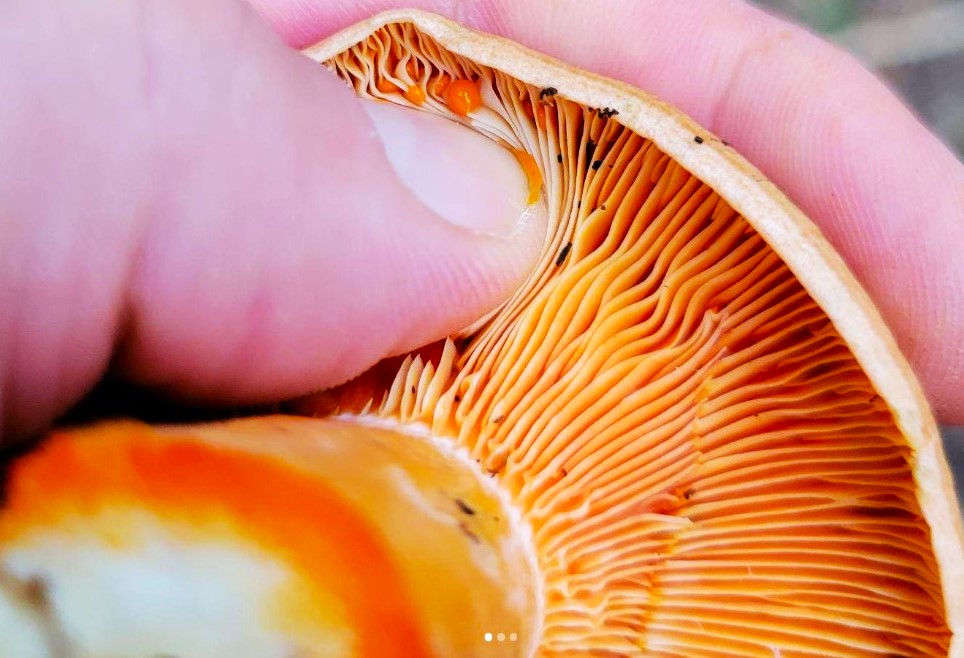
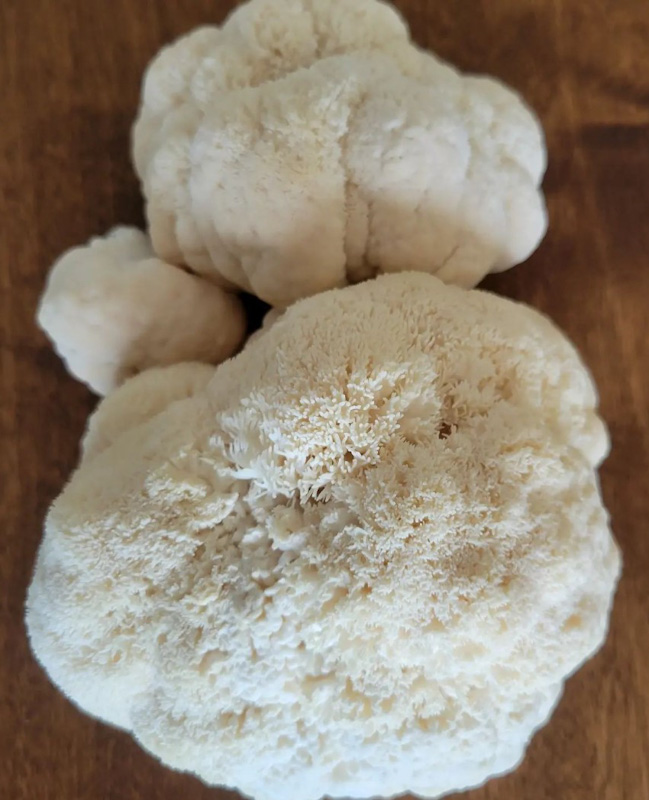

Lion's Mane Mushroom: A Saprophytic Fungi
Hericium sp. are highly sought-after edible saprophytic fungi that can be found growing in Ontario. This group of mushrooms produces a fruiting body with a distinctive cascading white icicle-like appearance and grows on dead or dying deciduous or coniferous wood (Stamets, 2011).
Saprophytic fungi are wood decomposers and are incredibly important recyclers on the planet. Saprophytic fungi are essential for ecosystem services and produce gourmet and medicinal, edible fruit bodies.
Hericium species produce exceptionally flavorful fruiting bodies; The flavor and texture is described as lobster or crab once cooked. Four species of teethed fungi belonging to the genus Hericium include Hericium erinaceum, Hericium coralloides, Hericium americanum, and Hericium abietis. Morphological traits of the fruitbody, spore size, and mycelium growth rate differentiate these four species (Sokół, 2016).
Hericium erinaceum, also known as Lion's mane mushroom, continues to be studied and cultivated for its medicinal properties.
Hericium erinaceum is found on dead or dying deciduous trees belonging to the genera Quercus sp., Fagus sp., Acer sp., Juglans sp., and Ulmus sp. (Sokół, 2016).
This mushroom is commonly found throughout the Northern Hemisphere, excluding tropical and polar regions, most common in eastern Canada and the United States.

Ecological Importance
Saprophytic fungi are wood decomposers, and considered primary decomposers. They are fast-growing, with the ability to quickly attach and send out rope-like strands of mycelium to decompose plant tissue. The decomposition of plant tissue regulates the transfer of carbon and nutrients to the soil (Chapin et al., 2011).
Ecosystems rely on fungi's ability to decompose organic plant material and return carbon, hydrogen, nitrogen, and minerals into the environment in forms usable to plants, insects, and other organisms.
The mycelial network weaves between and through the cell walls of plants, using enzymes and acids they secrete to degrade large molecular complexes into simpler compounds. Each species of saprophyte has developed a specific set of enzymes to break down lignin-cellulose (Stamets, 2011).
Importance to Humans
Lion's Mane mushrooms have been well-known for hundreds of years in traditional Chinese medicine and cuisine. The mycelium and the fruitbodies are rich in active, health-promoting substances (Sokół, 2016).
Tests have provided evidence that this mushroom can be used to treat cancer, hepatic disorders, Alzheimer's, and Parkinson's diseases, as well as improve cognitive abilities, supporting nervous and immune systems (Sokół, 2016).
Promising results have been reported in clinical trials and case reports about the human treatment (e.g., recovery from schizophrenia, and improvement of the quality of sleep, alleviation of the menopause symptoms (Sokół, 2016).
A patent awarded in Japan (#05391544) showed that H. erinaceum mushrooms produce Erinacines, potent stimulators to nerve growth factor synthesis (Kawagishi et al., 1991,1994).These compounds stimulate neurons to regrow, potentially significant in the treatment of senility, Alzheimer's disease, repairing neurological trauma from strokes, improving muscle/motor response pathways and cognitive function (Stamets, 2011).
| Nutritional Content |
Amount in 100g Serving |
| Protein |
31.7g |
| Fat |
4g |
| Ash |
9.8g |
| Carbohydrate |
17.6g |
| Energy |
223 kcal |
| Dietary Fiber |
30g |
| Sodium |
1.2mg |
| Phosphorus |
1.22g |
| Iron |
20.3mg |
| Calcium |
1.3mg |
| Potassium |
4.46mg |
| Mangnesium |
123mg |
| Thaimin |
5.33mg |
| Riboflavin |
3.91mg |
| Calciferol |
240IU |
| Naicin |
18.3mg |
| Ergosterol |
381mg |